/teachers|/djs|/dancers/<slug>. One-role people get no tab row.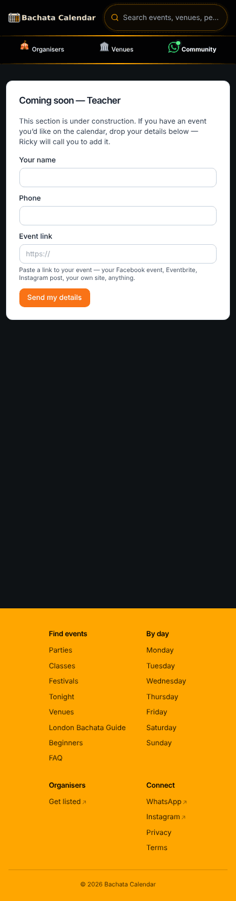
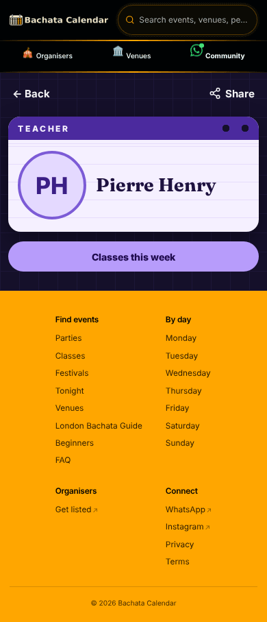
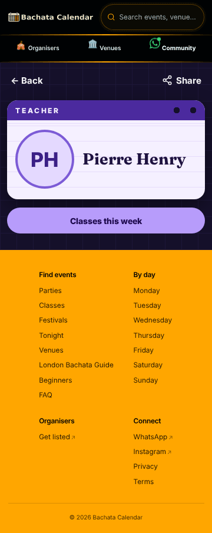
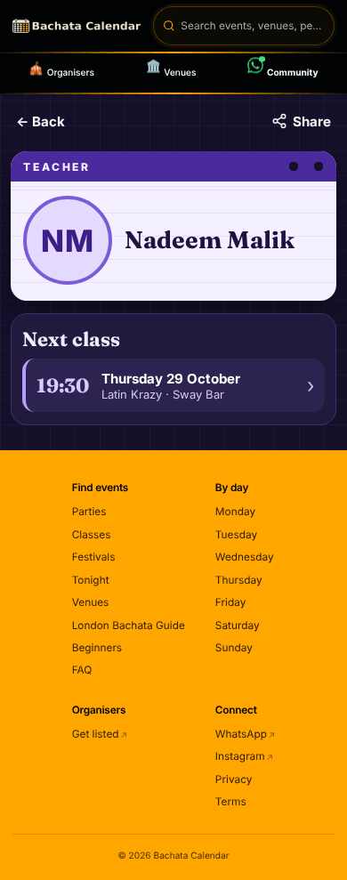
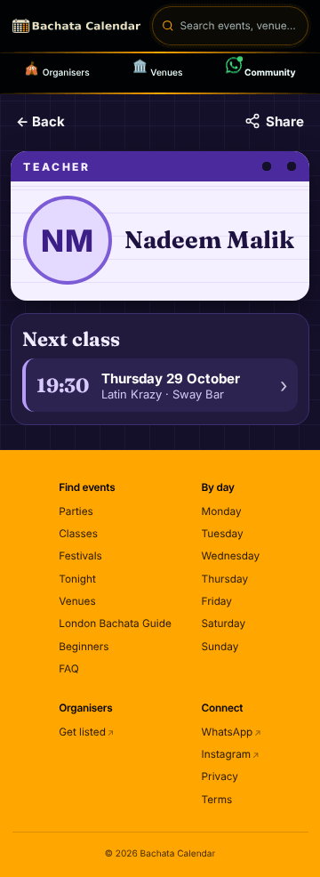

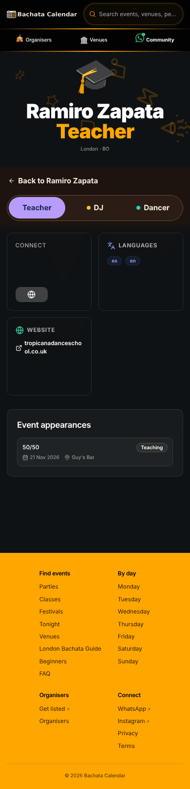
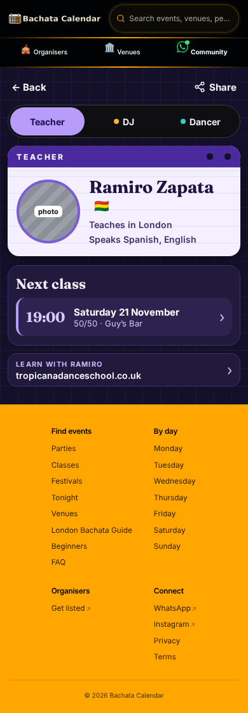
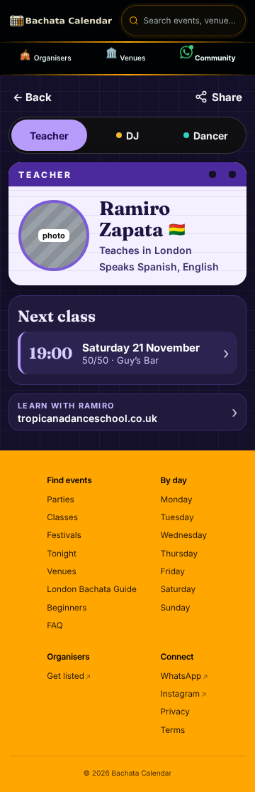
The calendar holds nothing for dancers, so today the dancer page ends in empty ground. Three answers, each drawn on a thin dancer-only person (Magda) and on Ramiro. In every world the footer now comes up straight after the content, so no answer leaves empty ground.

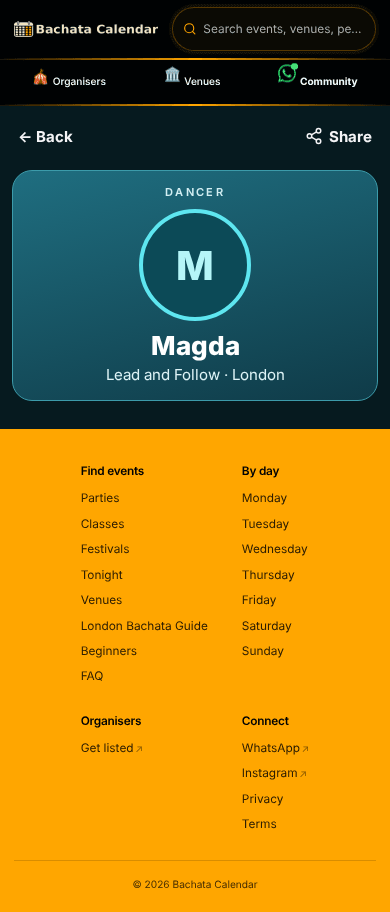
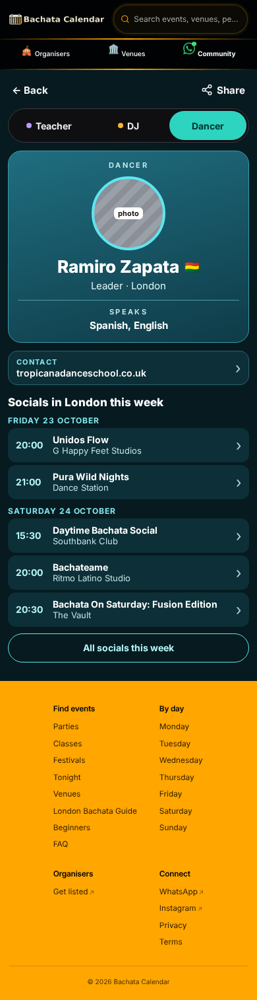

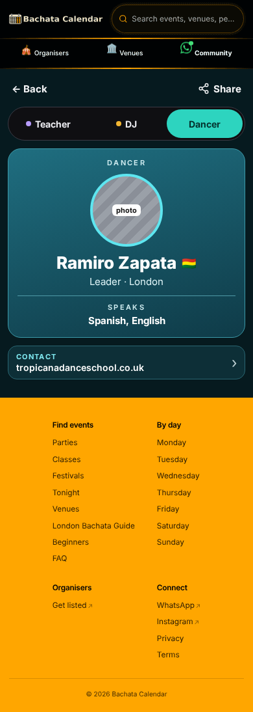
| Render | Lowest contrast | ≥ 4.5 | Taps ≥ 44 | No clipping | No sideways scroll at width | Tab row only for 2+ roles | Tabs (* = selected) | Tab y | Back y |
|---|---|---|---|---|---|---|---|---|---|
| magda-dancer-390.png | 4.79 | pass | pass | pass | pass | pass | – | – | 114 |
| magda-dancer-360.png | 4.79 | pass | pass | pass | pass | pass | – | – | 114 |
| sabrina-dancer-390.png | 4.79 | pass | pass | pass | pass | pass | – | – | 114 |
| sabrina-dancer-360.png | 4.79 | pass | pass | pass | pass | pass | – | – | 114 |
| pierre-teacher-390.png | 7.60 | pass | pass | pass | pass | pass | – | – | 114 |
| pierre-teacher-360.png | 7.60 | pass | pass | pass | pass | pass | – | – | 114 |
| nadeem-teacher-390.png | 8.85 | pass | pass | pass | pass | pass | – | – | 114 |
| nadeem-teacher-360.png | 8.85 | pass | pass | pass | pass | pass | – | – | 114 |
| papacito-dj-390.png | 5.91 | pass | pass | pass | pass | pass | DJ* Dancer | 164 | 114 |
| papacito-dj-360.png | 5.91 | pass | pass | pass | pass | pass | DJ* Dancer | 164 | 114 |
| papacito-dancer-390.png | 4.79 | pass | pass | pass | pass | pass | DJ Dancer* | 164 | 114 |
| papacito-dancer-360.png | 4.79 | pass | pass | pass | pass | pass | DJ Dancer* | 164 | 114 |
| ramiro-teacher-390.png | 7.60 | pass | pass | pass | pass | pass | Teacher* DJ Dancer | 164 | 114 |
| ramiro-teacher-360.png | 7.60 | pass | pass | pass | pass | pass | Teacher* DJ Dancer | 164 | 114 |
| ramiro-dj-390.png | 5.91 | pass | pass | pass | pass | pass | Teacher DJ* Dancer | 164 | 114 |
| ramiro-dj-360.png | 5.91 | pass | pass | pass | pass | pass | Teacher DJ* Dancer | 164 | 114 |
| ramiro-dancer-390.png | 4.79 | pass | pass | pass | pass | pass | Teacher DJ Dancer* | 164 | 114 |
| ramiro-dancer-360.png | 4.79 | pass | pass | pass | pass | pass | Teacher DJ Dancer* | 164 | 114 |
| magda-dancer-f1-390.png | 4.79 | pass | pass | pass | pass | pass | – | – | 114 |
| magda-dancer-f1-360.png | 4.79 | pass | pass | pass | pass | pass | – | – | 114 |
| magda-dancer-f2-390.png | 4.79 | pass | pass | pass | pass | pass | – | – | 114 |
| magda-dancer-f2-360.png | 4.79 | pass | pass | pass | pass | pass | – | – | 114 |
| magda-dancer-f3-390.png | 4.79 | pass | pass | pass | pass | pass | – | – | 114 |
| magda-dancer-f3-360.png | 4.79 | pass | pass | pass | pass | pass | – | – | 114 |
| ramiro-dancer-f1-390.png | 4.79 | pass | pass | pass | pass | pass | Teacher DJ Dancer* | 164 | 114 |
| ramiro-dancer-f1-360.png | 4.79 | pass | pass | pass | pass | pass | Teacher DJ Dancer* | 164 | 114 |
| ramiro-dancer-f2-390.png | 4.79 | pass | pass | pass | pass | pass | Teacher DJ Dancer* | 164 | 114 |
| ramiro-dancer-f2-360.png | 4.79 | pass | pass | pass | pass | pass | Teacher DJ Dancer* | 164 | 114 |
| ramiro-dancer-f3-390.png | 4.79 | pass | pass | pass | pass | pass | Teacher DJ Dancer* | 164 | 114 |
| ramiro-dancer-f3-360.png | 4.79 | pass | pass | pass | pass | pass | Teacher DJ Dancer* | 164 | 114 |
| Fact | Rule (src/facts.js) | Source |
|---|---|---|
| Name | namesOf: DJ world = DJ name big + public name small (only when different); else the public name | dancer_profiles display name; get_public_dj_v1.dj_name |
| Photo or initials | initialsOf; photo stand-in when a photo is set | dancer_profiles.avatar_url |
| Role tabs | tabsOf, order Teacher, DJ, Dancer; ALL roles, current one selected; only from 2 roles | get_public_person_roles_v1(id) |
| City | cityOf (hidden when empty, never a postcode) | based_city_id → cities.name |
| Flag | flagOf: the ISO code drawn as a flag, country name for screen readers | nationality |
| Languages | languageLine: "Spanish, English" | languages |
| Dates | upcomingOf + dateLabel ("Friday 23 October") + timeLabel | get_profile_event_timeline_v2(role, id), rows from today |
| Counts | countLabel, only from 2 | same rows |
| Played at | playedOf, month + year | same RPC, rows before today |
| Socials this week | socialsFor(city) | get_calendar_events_v2(week, city) |